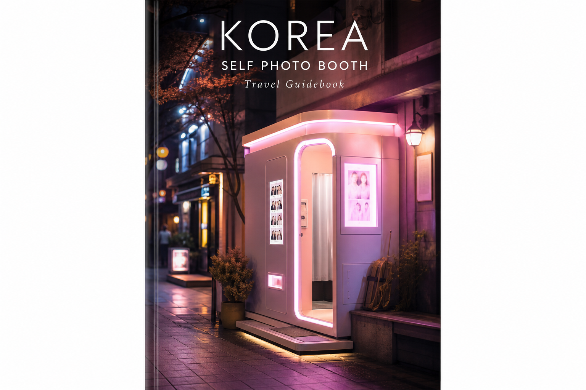

셀프 사진관
인생네컷·포토이즘 같은 셀프 즉석 사진. 기념 스티커 사진의 인기입니다.
셀프 사진관은 부스에서 직접 포즈·프레임을 골라 즉석 인화하는 한국 여행 필수 코스입니다. 홍대·명동·성수·강남에 브랜드 매장이 밀집해 있습니다.
키오스크에서 인원·매수·프레임을 고르고 카드·현금·QR로 결제합니다. 영어 메뉴가 있는 곳이 많고, 대기 줄이 길면 근처 다른 브랜드를 노려 보세요.
셀프 사진관은 부스에서 직접 포즈·프레임을 골라 즉석 인화하는 한국 여행 필수 코스입니다. 홍대·명동·성수·강남에 브랜드 매장이 밀집해 있습니다.
키오스크에서 인원·매수·프레임을 고르고 카드·현금·QR로 결제합니다. 영어 메뉴가 있는 곳이 많고, 대기 줄이 길면 근처 다른 브랜드를 노려 보세요.
가격 분위기 보통 1컷(4컷 분량) 4,000~6,000원대. 추가 인화·굿즈는 매장마다 다름.
이용 팁 부스 안 짐은 정리하고, 다음 사람을 위해 시간을 지켜 주세요. 인쇄물을 접어 캐리어에 넣으면 기념품으로 좋습니다.